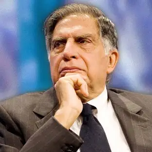

Ratan Tata
(1937-2024)
"The biggest risk is not taking any risk. In a world that is changing quickly, the only strategy that is guaranteed to fail is not taking risks."
Biography
Ratan Tata, born on December 28, 1937, is an iconic Indian industrialist and philanthropist. He served as the Chairman of Tata Sons, the holding company of the Tata Group, from 1991 to 2012, and again briefly in 2016. Under his leadership, the Tata Group expanded globally, acquiring prominent brands such as Jaguar Land Rover and Corus, making Tata one of the most respected business groups worldwide.
Beyond his business acumen, Ratan Tata is celebrated for his humility and commitment to societal welfare. He has been a strong advocate for innovation, ethical leadership, and sustainable business practices. His vision to provide affordable cars for the masses led to the creation of the Tata Nano, symbolizing his dedication to improving the lives of everyday people.
A man of few words but immense action, Tata is deeply involved in philanthropy through the Tata Trusts, which contribute significantly to education, healthcare, and rural development in India. His values of integrity and service have inspired generations.
Ratan Tata’s legacy extends far beyond business success. He remains a symbol of ethical leadership, compassion, and a relentless pursuit of excellence for the betterment of society.